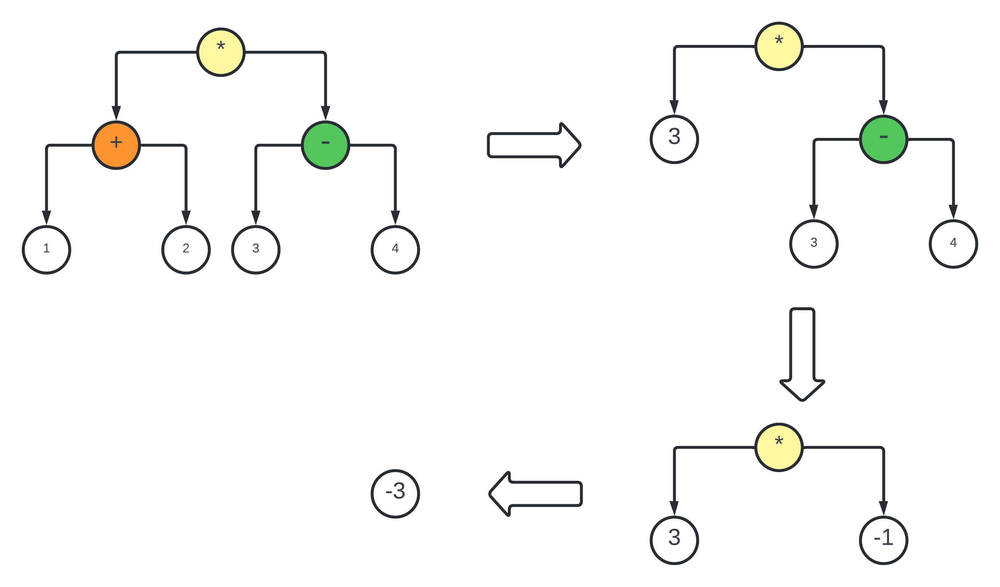

注意：本系列文章是 zcc 编译器 总结系列文章，本系列文章并不打算呈现所有的代码细节（主要是细节太多了，全部呈现既不现实文章也看着冗长而没有意义）。因为是总结性质的文章，所以更多是分享实现的过程中个人感兴趣的点
什么是 Middle-End
所谓的 Middle-End，其实就是夹在编译器 Front-End 和 Back-End 中间的这么一个玩意儿，作用主要是执行 优化 过程，以提高生成机器码的性能和质量
在 zcc 编译器中，做了比较简单的一步优化，即 常量折叠(Constant Folding)
什么是常量折叠
很简单，就是在 编译时 计算表达式，而不是 运行时 计算表达式
比如下面的代码
x = (1+2) * (3-4) |
在编译时就处理成
x = -3; |
最后交给 Back-End 生成汇编代码，就很简单了
能节省寄存器的同时，也减少了汇编代码的生成
如何进行常量折叠
一个最简单的思路就是 优化 ast，如下图所示

那么逻辑上，需要做几件事
- 递归折叠左子树
- 递归折叠右子树
- 如果当前节点是一个二元操作符节点(比如
+-*/)，并且有两个AST_INTEGER_LITERAL类型的叶子节点，需要折叠 - 如果当前节点是一个一元操作符节点(比如
~!)，并且只有一个AST_INTEGER_LITERAL节点，需要折叠
以下要讲的代码见 optimizer.c
对于整体的 optimise 函数来说，返回的是一个整体的 fold 函数
struct ASTNode *optimise(struct ASTNode *node) { |
对于 fold 函数来说，它是这样
static struct ASTNode *fold(struct ASTNode *node) { |
依然是做一个 后序递归遍历
注意对于一元操作符节点来说，它 只有一个 类型为 AST_INTEGER_LITERAL 的 左叶子节点
对于二元操作符来说，就需要做一个统一的计算，最后返回一个 AST_INTEGER_LITERAL 节点即可，如下
static struct ASTNode *fold_2_children(struct ASTNode *node) { |
对于一元操作符，也很简单，对其左叶子节点做一个计算即可
static struct ASTNode *fold_1_children(struct ASTNode *node) { |
注意这里当前节点可能是一个 AST_WIDEN 的节点，也就是说这个节点可能曾经经历过 隐式类型转换，这个时候则不需要对其做任何处理，直接返回一个 AST_INTEGER_LITERAL 节点即可
在哪里调用常量折叠优化代码
在解析函数定义的 parse_function_declaration 函数里面调用，如下
struct SymbolTable *parse_function_declaration( |
即先生成一个函数里面的复合语句的 ast，然后再对这个 ast 进行优化。因为 要计算的和优化的语句本来就在函数里面，所以这么做是合理的
总结
对于优化来讲，其实也有很多的方法，比如 inline expansion、dead code elimination, loop transformation, automatic parallelization 等，不过这些都不在本 zcc 编译器的讨论范围内。为了简便起见，zcc 编译器弄了一个比较简单的 constant folding 方法，通过后序遍历 ast 的方式，一定程度上对 ast 进行了优化